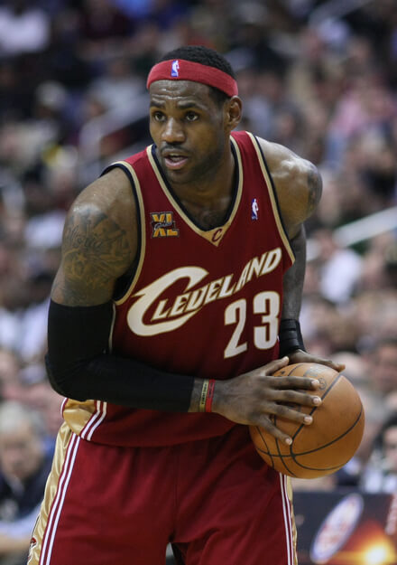

Cleveland Cavaliers (2003–2010)

The Cleveland Cavaliers selected James as the first overall pick of the 2003 NBA draft. James chose jersey number 23 in honor of Michael Jordan. In his first regular season game, James scored 25 points in a 106–92 loss to the Sacramento Kings, setting an NBA record for the most points scored by a prep-to-pro player in his debut performance. At the conclusion of the 2003–04 season, James became the first Cavalier to receive the NBA Rookie of the Year Award
In the 2004–05 season, James earned his first NBA All-Star Game selection. At the end of the season, James was named to his first All-NBA Team.
He finished 2005-2006 season second in overall NBA MVP Award voting, behind Steve Nash.
At the end of the 2008–2009 season, James finished second in the voting for the NBA Defensive Player of the Year Award. He made his first NBA All-Defensive Team, with 23 chase-down blocks and a career-high 93 total blocks.